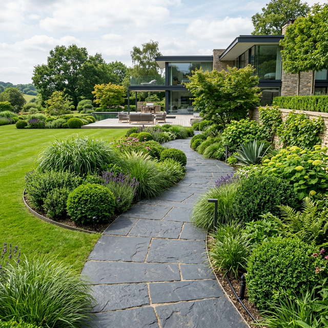
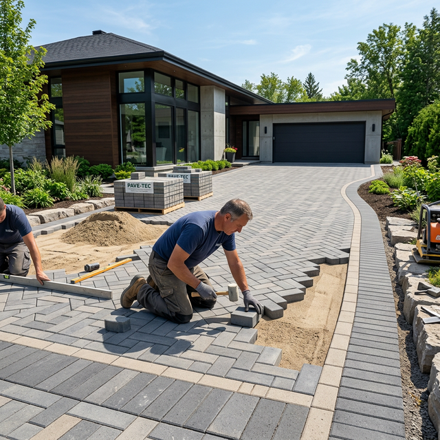
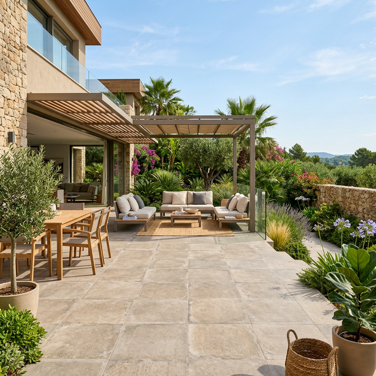
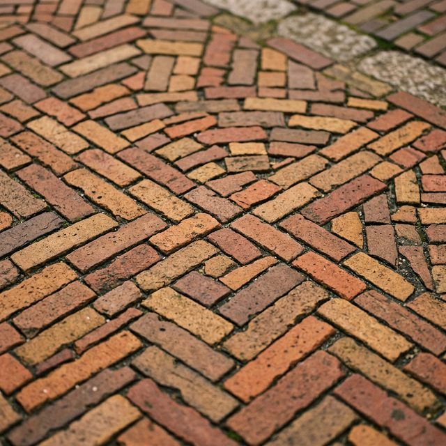

Wij transformeren uw buitenruimte met premium bestrating, strakke opritten en prachtige terrassen. Duurzaam, betrouwbaar en met oog voor detail.

Bij Steenstraters geloven we dat een sterke fundering de basis is van elke prachtige buitenruimte. Met jarenlange ervaring, toegewijde vakmensen en het gebruik van de beste materialen, leveren wij werk dat niet alleen vandaag mooi is, maar ook decennia lang meegaat.

Een strakke, duurzame oprit die het gewicht van auto's moeiteloos aankan en zorgt voor een geweldige eerste indruk.

Creëer de perfecte plek om buiten te ontspannen met onze prachtige terrassen, gelegd met precisie.

Geef uw tuin karakter met stijlvolle sierbestrating in diverse patronen, kleuren en materialen.
Wij leveren werk volgens de strengste kwaliteitsnormen in de bestratingsbranche.
Geen verborgen kosten. U krijgt een duidelijke prijs vooraf voor het gehele project.
Wij werken geordend en laten uw terrein altijd netjes en bezemschoon achter.
Neem vandaag nog contact met ons op voor een vrijblijvend adviesgesprek of een offerte op maat.
Start Uw Project